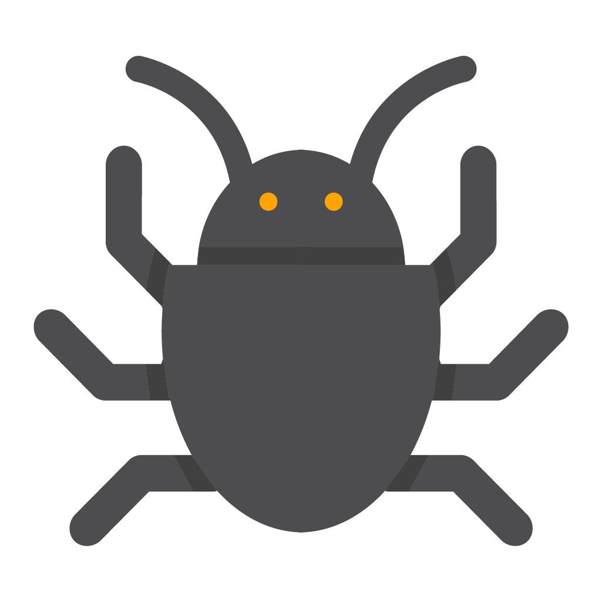
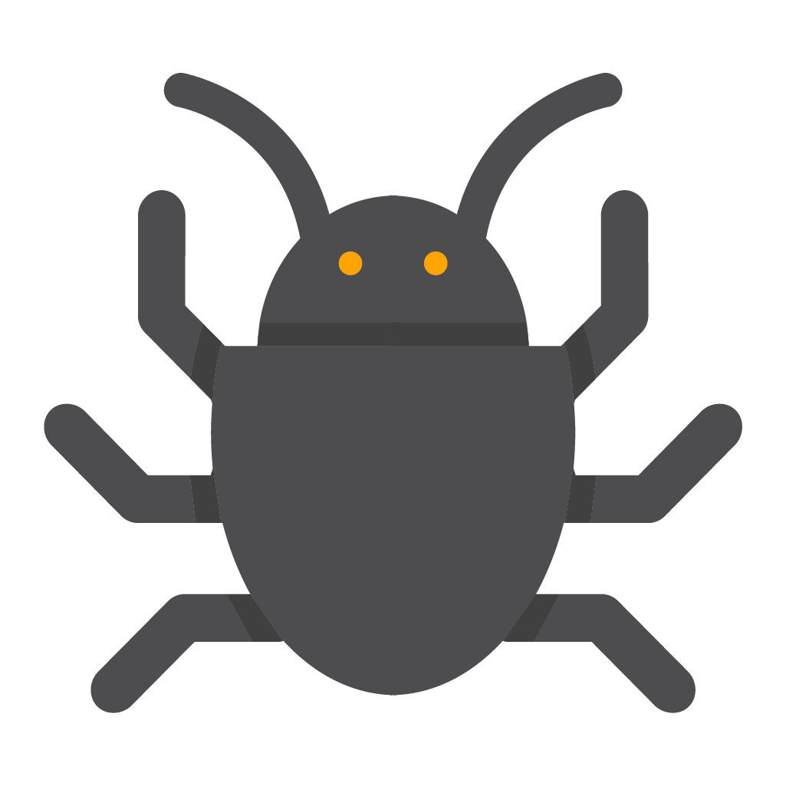

Prazer, sou George e estou cursando a faculdade de Analise e desenvolvimento de dados, em razão das minhas maiores paixões serem programação, segurança cibernética e astronomia, e assim estudo dois tópicos dos meus sonhos. entretanto já estudava programação desde de a minha infância, como disse, sempre era fascinado pela área, mas como era criança não sabia qual rumo tomar.
Agora já decidido que quero ser um programador e meu limite é os planetas.
Posso dizer que sou um prodígio na área, tendo python e HTML/CSS/JS como linguagem principais, e outras linguagens segundarias comoC++, PHP, SQL...


 
